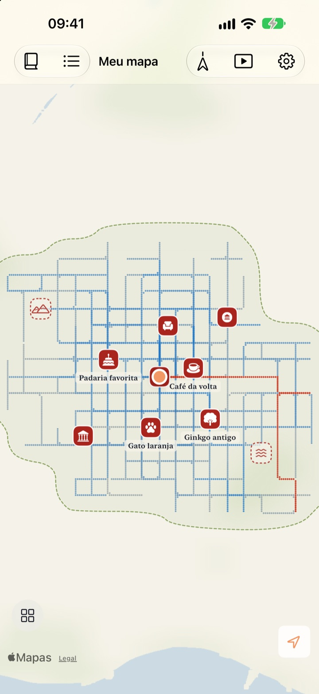
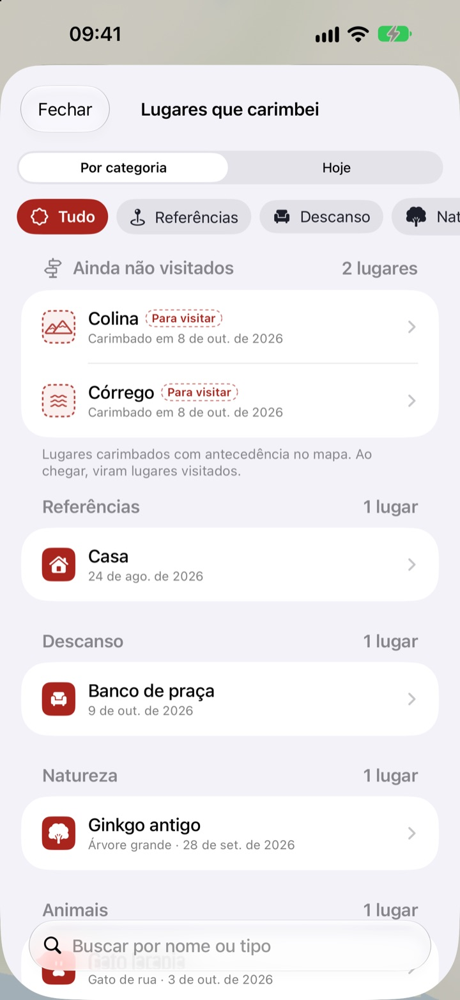
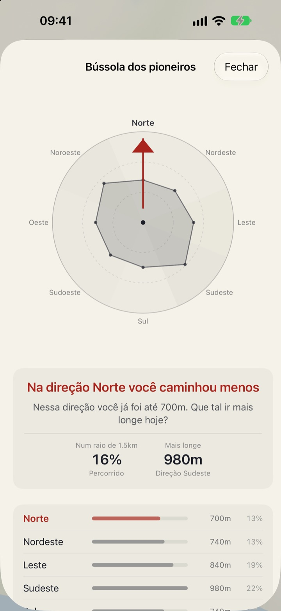
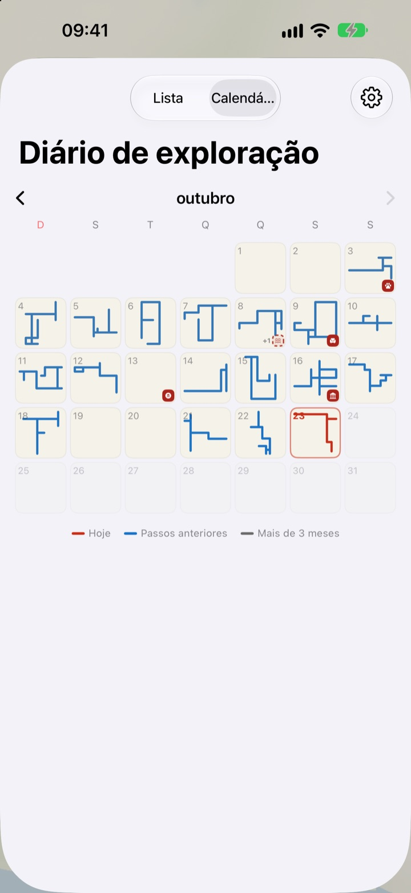

Um mapa que só
se preenche a pé
Ele começa como uma folha em branco. Só os lugares por onde você anda vão sendo preenchidos, ponto a ponto, e passar cem vezes pela mesma rua não o alarga. Para o mapa crescer, pegue um caminho novo.
Todos os recursos são grátis, sem anúncios.

Dê uma volta
Arraste o dedo ou o mouse pelo papel para caminhar. Os pontos azuis são ruas por onde você já passou. Veja como o Caminho de hoje muda quando você repete o trajeto ou vai para um lado novo.
Sempre pelas mesmas ruas?
Um contador de passos conta passos, mas nunca pergunta para onde eles foram. Casa, estação e volta, e o anel enche direitinho, enquanto a ruazinha ao lado continua um mistério por anos. O Buktu Buktu só conta os caminhos que você faz pela primeira vez, e isso dá um motivo para desviar um quarteirão hoje.
Carimbe onde você esteve e onde quer ir
Carimbe o lugar onde você está ou mantenha pressionado qualquer ponto do mapa. São 212 carimbos para escolher, organizados por categoria.
Um carimbo colocado onde você nunca andou fica como lugar para visitar e vira lugar visitado quando você chega lá de verdade. Fotografe a placa de uma loja e o fundo é recortado, deixando a placa em pé como um adesivo naquele ponto.

Próxima caminhada: para onde você menos foi
A Bússola dos pioneiros divide os arredores em oito direções e aponta a que você menos percorreu.
Pegadas de hoje mostra em ordem os lugares onde você parou hoje, com a distância caminhada entre eles.

Cada dia deixa uma forma
O calendário desenha a forma da caminhada de cada dia em vez de um número. Mantenha um diário com texto e fotos e veja quanto de cada caminhada foi território novo.
Escolha um período e veja seu mapa sendo desenhado em um vídeo que dá para exportar.

Comece em três passos
- 1
Abra o app
Uma folha em branco se desdobra.
- 2
Permita a localização
Escolha “Sempre” e ative “Movimento e Preparo Físico” para registrar caminhadas sem abrir o app.
- 3
Saia para andar
Quanto menos conhecida a rua, mais o mapa cresce.
Como ler o mapa
- Pontos vermelhos
- onde você andou hoje
- Pontos índigo
- passos anteriores, mais escuros onde você passa mais
- Pontos cinza
- lugares aonde você não volta há mais de três meses. Eles desbotam, mas nunca somem
- Carimbo tracejado
- um lugar “Para visitar”. Vira visitado quando você chega lá
- Caminhos que desenhei
- comprimento total dos caminhos feitos pela primeira vez
- Caminho de hoje
- quanto da caminhada de hoje foi novo
- Ver tudo junto
- nos ajustes, abre a Bússola dos pioneiros, as Pegadas de hoje e o filme do seu mapa
Escolha entre o mapa em nanquim e o Mapa ilustrado.
Todos os recursos são grátis
Grátis
- Um mapa que só se preenche a pé, com registro de caminhos novos
- 212 carimbos e adesivos de placas de loja
- Bússola dos pioneiros e Pegadas de hoje
- Calendário e diário com texto e fotos
- Exportação do vídeo do seu mapa sendo desenhado
- Widgets para a Tela de Início e a Tela Bloqueada
- Sincronização com o iCloud entre aparelhos
Apoie o desenvolvedor
- Se quiser, mande uma gorjeta pequena pelos ajustes
- A gorjeta não libera nada. O app continua igualzinho
Sem anúncios, sem assinatura.
Perguntas
Caminhei, mas nada apareceu no mapa.
Vá em Ajustes > Buktu Buktu > Localização, escolha “Sempre” e ative “Movimento e Preparo Físico”. Assim o registro funciona mesmo com o app fechado. Se você escolheu o modo de registro que economiza bateria nos ajustes do app, abra o app antes de sair. Localizações pouco precisas são salvas, mas não desenhadas.
Trajetos de carro ou metrô são registrados?
Não. O app usa dados de movimento e a velocidade para desenhar só caminhada e corrida, e deixa de fora trechos que parecem ser de veículo. De vez em quando pode errar.
Faço o mesmo trajeto todo dia e o mapa não cresce.
É a regra. Tudo a menos de 30 m de onde você já andou conta como o mesmo caminho, então só caminhos novos somam em Caminhos que desenhei. A calçada do outro lado da rua também conta como o mesmo caminho. A Bússola dos pioneiros mostra por onde você menos andou.
Minha localização é enviada para algum lugar?
Para o desenvolvedor, não. Seus passos, carimbos, diário e fotos ficam no seu aparelho e no seu iCloud privado, e o desenvolvedor não consegue vê-los. As estatísticas de uso anônimas nunca incluem coordenadas, texto do diário, nomes de lugares nem fotos. Os serviços do Apple Mapas são usados para transformar coordenadas em nomes de lugares. Veja mais detalhes na Política de Privacidade abaixo.
Meus registros passam para um aparelho novo?
Sim. Entre com a mesma Conta Apple no aparelho novo e mantenha o iCloud ativado: seus passos, carimbos, diário e fotos vão junto.
Como apago um carimbo ou uma foto?
Apague carimbos na lista Lugares que carimbei e mantenha pressionada uma foto do diário para apagá-la. Uma forma de apagar de uma vez todos os caminhos e entradas do diário está nos planos.
Como adiciono o widget?
Toque e mantenha pressionada a Tela de Início, toque em Editar > Adicionar Widget e escolha Buktu Buktu. Na Tela Bloqueada, toque e mantenha pressionado e depois toque em Personalizar. O widget da Tela de Início mostra a forma e o comprimento do caminho de hoje; o da Tela Bloqueada, a distância de hoje.
Do que eu preciso?
De um iPhone com iOS 17.0 ou posterior.
Como entro em contato?
Envie sua opinião pelos ajustes do app ou mande um e-mail para o endereço abaixo. Responderemos o quanto antes.
Dúvidas ou sugestões? Escreva para leeo@kakao.com.